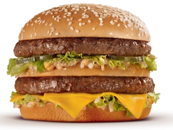
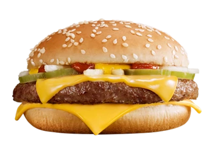
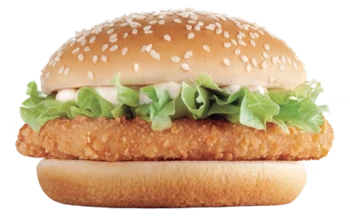
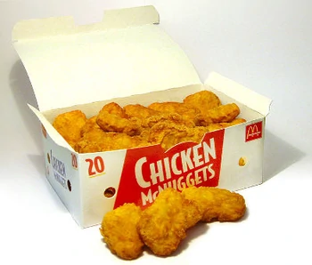
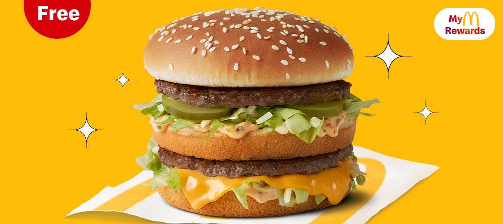
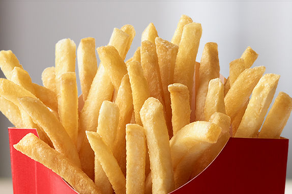
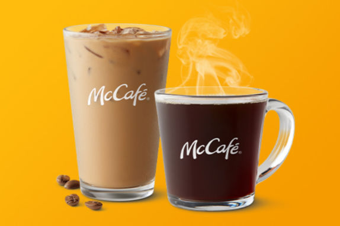
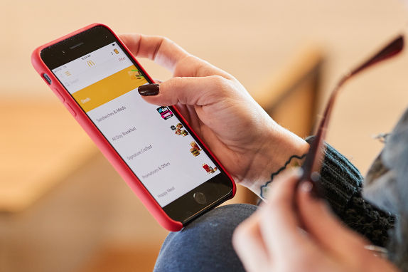

INICIO
McDonald's es una franquicia de restaurantes de comida rápida estadounidense con sede en Chicago, Illinois. Sus principales productos son las hamburguesas, las patatas fritas, los menús para el desayuno y los refrescos. También se encuentra una oferta disponible de batidos, helados, postres y, recientemente, ensaladas de fruta o de verdura (así como otros productos exclusivos dependiendo del país). Atiende aproximadamente a 68 millones de clientes por día, en más de 36.000 establecimientos de 118 territorios y países alrededor del mundo. La cadena empleó en 2014 a 1,7 millones de personas. Por otra parte, en la mayoría de los restaurantes, se han incluido distintas zonas de juegos para niños.
En 1940, los hermanos Dick y Mac McDonald decidieron crear la empresa e introdujeron la comida rápida ocho años después. Su salto cualitativo fue en 1955 con la primera franquicia exitosa, asumida por el ejecutivo Ray Kroc (quien luego intentaría hacerse con el control de la empresa), después de algunos intentos sin demasiada ambición por parte de los hermanos McDonald. Al no funcionar los mismos, aceptaron que Kroc estuviera encargado de aquellas franquicias, mientras que ellos solo recibían regalías.
Al poco tiempo, su crecimiento y expansión fue de manera exponencial; incluso su presencia global indujo a la publicación británica The Economist a elaborar el índice Big Mac, el cual consistía en comparar el precio de una hamburguesa (el Big Mac, uno de los productos más conocidos de la cadena) en todos los países donde la vendían. De este modo, se lograba establecer un parámetro común de los costos de vida en cada país, así como saber si las divisas en curso estaban sobrevaloradas con respecto al dólar estadounidense
PRODUCTOS
Hamburguesa
Las carne de McDonald's se sazonan con sal y pimienta molida. Esta lista se basa en los elementos del menú principal de los Estados Unidos, con algunas adiciones de productos globales.
Big Mac: consta de dos carnes molida de 45 g (1.6 onzas) (peso aproximado sin cocer), salsa especial Big Mac, lechuga, queso, pepinillos y cebollas picadas en un pan de semillas de sésamo, con un pan medio adicional (llamado "capa club") que separa las carnes.

Big N' Tasty: introducida en 1997 en California, era una empanada de carne de vacuno de 110 g (4 onzas) con salsa de tomate, queso, mayonesa con cebollas a la parrilla, en cubitos, encurtidos, lechuga y tomates. Fue diseñado para parecerse al sándwich Whopper de Burger King.
Cuarto de libra: una hamburguesa de carne de 120 g (4.25 onzas) (originalmente 113 g (4 onzas) hasta 2015) (peso sin cocer aprox.) con salsa de tomate, mostaza, cebollas picadas, pepinillos y dos rebanadas de queso. Fue inventada por Al Bernardin, propietario de una franquicia y ex vicepresidente de desarrollo de productos de McDonald's, en su McDonald's en Fremont, California, en 1971.
Pollo
McPollo: un sándwich de pollo ligeramente picante que también se ofrece en una variante más picante (el Hot n 'Spicy) en algunos mercados. El sándwich está hecho 100% de carne blanca molida de pollo, mayonesa y lechuga rallada, en un panecillo tostado.
McNuggets de pollo: Introducidos en 1983 como reemplazo del McPollo, estos son pequeños trozos de pollo servidos con salsas de barbacoa, agridulce, miel y mostaza picante. Los McNuggets están disponibles en 4, 6, 10 (originalmente 9) o 20 piezas. Ocasionalmente, están disponibles en paquetes de 40 o 50 piezas con fines promocionales.
Pescado
Filet-O-Fish: un filete de pescado con salsa tártara y media loncha de queso en un panecillo al vapor. Se introdujo en Cincinnati en 1962 cuando se descubrió que muchos católicos romanos optaban por comer en Frisch's Big Boy los viernes y durante la Cuaresma, ya que ofrecía un sándwich de pescado para que los clientes no tuvieran que comer carne.
Fish McBite: se incorporó al menú como otra opción de pescado pero fueron retirados a finales de marzo de 2013 debido a sus bajas ventas.
Desayunos
McDonald's introdujo los alimentos para el desayuno en 1972 y su principal oferta de desayuno son los sándwiches para el desayuno.
McMuffins: son sándwiches de desayuno exclusivos de McDonald's. Vendido por primera vez en restaurantes selectos en 1972 como Egg McMuffins, cinco años antes de que entrara en vigor oficialmente un menú de desayuno, consiste en un huevo frito, tocino (llamado tocino canadiense en los EE. UU.) y queso americano en un panecillo inglés tostado. También se encuentran disponibles McMuffins con huevo y salchicha o salchicha y tocino. Un McMuffin de Pollo se ofrece en Sudáfrica. Variaciones dobles de todas los McMuffins están disponibles en Australia (solo en estados seleccionados) y el Reino Unido.
PROMOCIONES
Big Mac® gratis ahora. McDonald’s gratis ahorita.* Obtén una Big Mac grandes gratis cuando descargas el app de McDonal’s y participas en MyMcDonald’s Rewards. Elige entre Hash Browns, un Cono de Vainilla, un McChicken® o una Cheeseburger gratis después de tu primera orden.
Papitas Grandes por $1* Papitas grandes quiere decir que tendrás suficientes para compartirlas con amigos. Llévatelas por $1 — solo por nuestro app.
Café Premium Roast o Iced Coffee de cualquier tamaño por 99 cent.* Bien frío o caliente, llévatelo por solo 99 cent. *Las Recompensas de McCafé ganadas el o después del 28 de diciembre de 2020 son válidas por 60 días a partir de la fecha en que las ganaste, en McDonald’s participantes de EE. UU. Se requiere la descarga del App de McD y el registro.
CONTACTOS
¿Quieres hablar con nosotros? Para McDonald’s los comentarios de nuestros consumidores son muy valiosos y una manera de mejorar el servicio cada día. Puedes ponerte en contacto con nosotros, a través del número: 917 547 890 Servicio de Atención al Cliente de McDonald’s lunes a viernes de 10.00 a 22:00 horas (sábados, domingos y festivos tanto nacionales como locales no hay servicio). de la dirección de correo electrónico atencionconsumidor@es.mcd.com